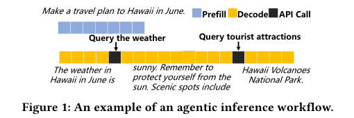
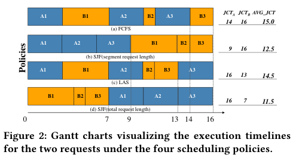
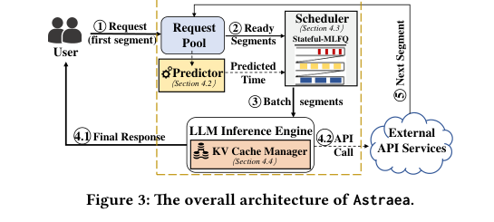
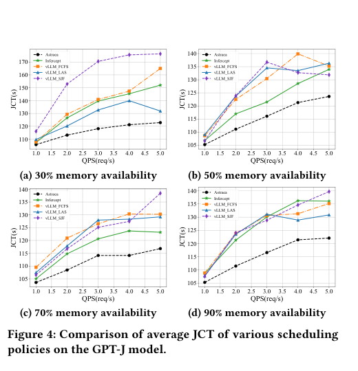
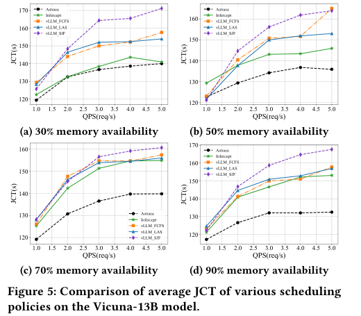
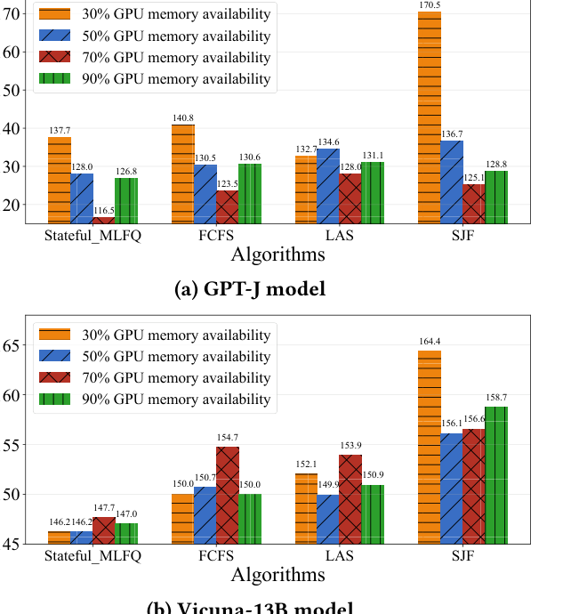
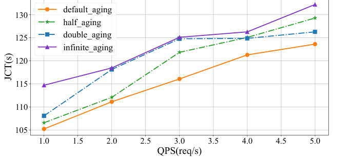
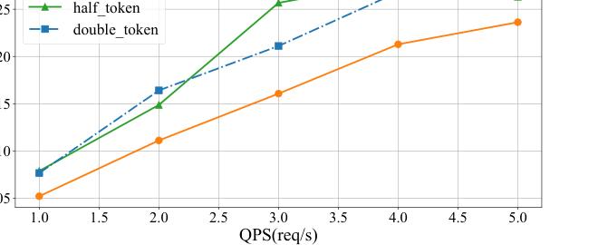

Astraea：面向 LLM 驱动 Agent 的 状态感知调度引擎
摘要
Large Language Models（LLMs）正越来越多地被部署为智能 Agent。它们的多阶段工作流在本地计算与对 Web APIs 等外部网络服务的调用之间交替执行，这使其执行模式与 vLLM 等现有推理系统的调度粒度之间出现不匹配。现有系统通常关注逐 segment 优化，这阻止它们最小化完整 agentic workflow 的端到端延迟，即整个请求生命周期上的全局 Job Completion Time（JCT）。为解决这一限制，我们提出 Astraea，这是一种服务引擎，旨在把优化目标从局部 segment 转移到全局请求生命周期。Astraea 采用状态感知的分层调度算法，将请求的历史状态与未来预测结合起来。它根据请求的 I/O 密集性与计算密集性动态分类，并使用增强的 HRRN 策略平衡效率与公平性。Astraea 还实现了一个自适应 KV cache manager，能够根据系统内存压力，在 I/O 等待期间智能处理 Agent 状态。大量实验表明，与基线方法相比，Astraea 可将平均 JCT 最多降低 25.5%。此外，在不同模型规模的高负载条件下，我们的方法表现出很强的鲁棒性和稳定性。
关键词
LLM Serving Systems；LLM Inference Engine；Agentic workflows；Latency Optimization
1 引言
Large Language Models（LLMs）作为云服务通过 Web APIs 被广泛部署，催生了新一代强大的 Web 应用。同时，LLM 正逐渐从语言处理器演进为能够自主规划和执行任务的智能 Agent（LLM Agents）。这些 Agent 通过程序化地向 Web 服务和其他资源发出一系列 API 调用来利用外部工具 [10, 24, 29]，从而完成更复杂的任务，例如自主浏览 Web [11, 46, 51]、解决 GitHub 问题 [16, 39, 44]，以及证明有挑战性的数学问题 [9, 19]。

这些 agentic 任务的执行引入了一种多阶段推理工作流，其结构不同于传统 LLM 的处理过程。标准推理过程包含两个不同阶段：计算密集的 Prefill 阶段并行处理输入上下文，随后是受内存限制的 Decode 阶段，以自回归方式生成 token。在整个过程中，key-value（KV）cache 用于存储中间状态，从而加速后续 token 的生成。
然而，如图 1 所示，Agent 执行的是更复杂的 agentic workflow，由多个这样的推理过程组成。当用户发出请求时，例如“Make a travel plan to Hawaii in June.”，系统执行第一次推理过程，直到 Agent 生成一个特殊 token 来触发查询天气的 API 调用。此时 LLM 计算暂停，系统进入 I/O 等待状态。一旦 API 返回结果，例如“The weather is sunny.”，这条新信息会被追加到上下文中，流程继续进入另一个 Prefill 和 Decode 周期。这种从单一计算任务到计算与外部 API 调用交替的动态多阶段工作流的演化，为底层服务基础设施带来了前所未有的挑战，要求重新思考如何为这些高级系统调度请求和管理资源。
这种新的 agentic workflow 暴露出现有 LLM serving systems 的两个缺陷。第一，当前调度器 [22, 27] 很大程度上没有感知 API 调用时长，从而导致严重的 Head-of-Line（HoL）blocking。这些系统只关注计算阶段建模，例如 𝑆³ [17] 预测 decode 长度，以提升 GPU 利用率并加速推理。然而，在 LLM Agent 场景中，decode 时间往往只是请求总生命周期中可以忽略的一部分。例如，对 SerpAPI 的 Web 搜索 API 调用可能持续数秒，而 decode 阶段只有毫秒级。忽略主导性 API 时长的调度器无法做出有效的资源分配或调度决策。
第二，vLLM 等当前系统把 agentic workflow 的每个 segment 视为独立任务。这种方法优化的是局部指标，也就是当前 segment 的响应时间，却不能为整个多阶段请求优化端到端 Job Completion Time（JCT）。这两个缺陷揭示了一个关键研究空白。为设计能够填补该空白的新范式，需要克服两个挑战。
挑战 1：状态管理中的高风险权衡。Agentic workflows 会引入较长的 I/O 等待期，在此期间大型 KV cache 闲置在 GPU 上。这带来了关键的资源管理困境：在 GPU 内存中保留 cache 会占用稀缺资源并降低系统吞吐量，而丢弃 cache 则会在恢复时产生显著的重计算延迟。这形成了单请求延迟与系统级吞吐量之间的内在权衡。
挑战 2：面向全局优化的生命周期感知调度。一个 segment 的局部属性与其对端到端 JCT 的全局影响严重脱耦，因为后者由未来 I/O 阶段决定。这种脱节会引入 HoL blocking 风险，即优先调度一个看似最优的 segment，可能在长时间 API 调用期间饿死其他请求，从而造成灾难性的全局后果。
为应对上述挑战，我们提出一种新的调度范式，把请求的历史状态与对其未来行为的预测统一起来，并提出 Astraea，一个以生命周期为中心、面向 LLM agentic workflows 的推理服务引擎。它的目标是优化全局 Job Completion Time（JCT），而不是短视的逐 segment 指标。我们的主要贡献如下：
- 我们形式化 LLM agent workflows 的调度问题，并证明其为 NP-hard，为启发式算法设计提供理论基础（第 3.1 节）。
- 我们设计了一种新的状态感知分层抢占式调度机制 Astraea，它统一历史工作流行为与未来预测。在宏观层面，请求根据计算与 I/O 特征被动态分类；在微观层面，调度顺序由等待时间和预测服务时长共同决定，从而平衡效率与公平性（第 4 节）。
- 我们基于主流 vLLM 框架实现了 Astraea 原型，并通过实验表明，在混合计算与 I/O 特征的异构负载下，Astraea 与基线方法相比最多可将平均 JCT 降低 25.5%，显著提升对延迟敏感的交互式应用的 Quality of Experience（QoE）。此外，随着系统负载上升，其性能退化幅度比基线低 3.2 倍，表现出更好的鲁棒性（第 5 节）。
2 背景与动机
LLM 作为自主 Agent 的兴起，代表了计算工作负载范式的转变，即从一次性推理转向交错计算与外部工具使用的动态多阶段工作流。这一新范式暴露出现有 LLM serving systems 的关键瓶颈，因为这些系统的架构面向一次性查询。本节通过梳理这一演进、刻画推理工作流，并用具体示例说明为什么新的以调度为中心的方法对 agentic efficiency 至关重要。
2.1 背景
2.1.1 从基础 LLM 到 LLM 驱动 Agent 的演进
早期 LLM 擅长 in-context learning（ICL），但本质上作为独立文本生成器运行，缺乏与外部环境交互或动态验证生成知识的机制。一个关键进展是 Chain-of-Thought（CoT）[41] 等结构化推理框架的出现。它把推理负载从单次查询响应事务转变为更长的顺序推理过程，并隐式引入了早期工作流语义。
基于此，ReAct [47] 等框架把推理与外部动作结合起来，使模型能够使用工具，并将内部推理锚定在真实世界观测上。从系统角度看，这种整合把负载从连续计算转变为本地推理与远程 I/O 之间的循环，这正是 agentic workflows 的特征。
Agent 的“action”能力由多种模式实现，广义上都可以看作 API 调用。根据交互目标，它们可分为三类：（1）集成非 LLM 工具，即调用外部专用 API 以弥补 LLM 的不足，例如使用翻译器或信息检索系统；（2）迭代 self-calls，即 LLM 多次调用自身来分解任务并维护推理历史；（3）多组件协作，即把多个模型和工具组合成由核心 planner LLM 编排的协作系统。该范式催生了 LangChain [21] 和 AgentGraph [6] 等框架，从而支持复杂的多 Agent 协作工作流。
2.1.2 LLM 推理工作流
LLM 驱动多种 chatbot 和 AI 应用，主要使用基于 Transformer 的模型，例如 GPT [30]、Claude [4] 和 LLaMA [38]。LLM 推理过程通常包含两个主要阶段：Prefill 和 Decode。
在 prefill 阶段，系统处理输入 prompt，通过一次前向传播把它转换为中间 token 状态。该阶段是计算密集型的，因为它需要处理完整输入以生成初始 KV cache，而 KV cache 存储模型生成过程中所需的中间状态信息，用于加速后续 token 生成。
随后在 decode 阶段，模型依赖先前生成的 token，以自回归方式逐个生成新 token。该过程是内存带宽密集型的，因为模型频繁访问先前生成的 token 和 KV cache 来生成下一个 token。通过这一机制，模型无需重新计算所有先前 token 即可生成连贯输出，从而显著提升效率。
然而，在 LLM agent inference 中，系统可能需要进行外部工具调用，例如查询数据库、执行复杂计算或访问外部 APIs。这些外部调用会中断推理过程，使系统进入等待状态，直到外部工具返回结果。API 调用时间高度不可预测，范围可以从亚毫秒 API 调用到需要数分钟的人类响应。此时，系统必须选择如何管理被中断的 KV cache sequence。常见策略涉及延迟与内存开销之间的权衡。Preserve 策略把 KV cache 完全保留在 GPU 内存中，改善恢复延迟，但增加内存压力并降低系统吞吐。另一个极端是 Discard 策略，释放全部 KV cache，并在工具返回后重新执行 prefill 阶段；这简化了状态管理，但导致冗余计算。混合方法是 Swap 策略，它在中断期间把 KV cache 迁移到 CPU 内存，并在之后迁回，从而在内存压力和计算效率之间折中，但代价是 I/O 传输延迟。
API 调用结束后，其响应会被视为额外 token sequence，追加到原始输入 sequence。模型只需对新增部分执行一次前向传播，并把生成的 key-value cache 追加到原 cache。
2.2 动机
尽管传统调度器常以最小化端到端延迟为设计目标，但在 agentic workflows 中却可能适得其反。它们把每个计算 segment 视为独立任务，因此采用短视视角。虽然这可能优化局部性能，却忽略了请求生命周期中的链式依赖，导致次优的全局性能并降低总体系统效率。

为说明这一限制，我们给出一个包含两个并发请求 A 和 B 的动机示例，其 segment 执行时间见图 2。请求 A 包含三个 segment，每个需要 3 个时间单位。请求 B 包含三个 segment，其处理时间分别为 4、1 和 2 个时间单位。我们比较该场景下四种调度策略的表现：
- First-Come-First-Served（FCFS）：一种基线策略，严格按到达顺序执行 segment。在该示例中，它的任意初始选择，即优先 A1 而非 B1，会因 agentic workflow 的链式依赖对 B 的后续 segment 造成级联延迟，得到较差的平均 JCT 15.0。
- segment 级 Shortest-Job-First（SJF）：一种短视策略，总是选择已就绪且处理时间最短的 segment。该策略快速完成请求 A 的全部短 segment，使 A 的局部 JCT 达到优秀的 9.0，但它会完全饿死较长的请求 B，直到 A 完成，导致 B 的 JCT 为糟糕的 16.0，平均 JCT 为一般的 12.5。
- Least-Attained-Service（LAS）：一种面向公平性的策略，优先调度累计已获服务量最少的请求。它交错执行 A 和 B，但未能识别出优先执行 B 的短尾部 segment（B2、B3）在全局上更高效，因此平均 JCT 高达 14.5。
- request 级 Shortest-Job-First（SJF）：一种 oracle 策略，优先处理总服务时间最短的请求，代表最优情况。它智能地优先完成较短的请求 B，从而将平均 JCT 最小化到 11.5。
分析表明，尽管传统调度策略各有优点，例如 FCFS 的简单性和无饥饿保证、LAS 的请求间公平性，以及 segment 级 SJF 在一次性推理中已被证明有效的贪心优化，但它们共同无法建模多阶段流程，因此会导致严重的级联延迟或 HoL blocking。在本文中，我们提出 Astraea，一个状态感知调度引擎，旨在超越这些限制。通过把历史上下文与预测性预报统一起来，Astraea 在在线环境中近似获得全局、生命周期导向视角的收益。
3 系统模型与问题形式化
为应对 LLM agent inference 中“compute-I/O”交替执行带来的调度挑战，本节首先形式化 agentic execution workflow，然后定义调度目标。
3.1 问题形式化
LLM agents 通过使用外部工具完成复杂任务，因此其执行天然是多阶段的。我们把由用户发起的端到端推理任务定义为一个 parent request（或 complete request），记为 \(R_{i}\)。它的执行过程不是单一计算过程，而是由若干 segment 组成的动态多阶段工作流。我们把 \(R_{i}\) 的生命周期形式化表示为有序 segmented requests 序列：
其中 \(k_{i}\) 是请求 \(R_{i}\) 中 segment 的总数，在请求初始到达时未知。
每个 segmented request \(S_{i}^{j}\) 的内部执行流可进一步抽象为三个有序阶段，它们具有不同的资源消耗特征：
- Prefill Stage：该阶段负责在当前上下文上执行并行 Attention 计算，以生成初始 KV cache。其执行速度主要受 GPU 每秒浮点运算数（FLOPS）限制。因此，我们把该阶段归类为 Compute-bound。
- Decoding Stage：该阶段以自回归方式逐个生成 token。其执行速度主要受 GPU 内存带宽限制。我们把该阶段归类为 Memory-bound。
- API Call Stage：该阶段涉及与外部网络服务交互，在此期间本地计算和内存资源保持空闲。我们把该阶段归类为 I/O-bound。
为形式化建模 segmented request \(S_{i}^{j}\)，我们把它表示为一个三元组，其中每个元素代表相应阶段的预期服务时间成本：
请求生命周期中不同资源瓶颈交替出现，是该调度问题的核心挑战。传统调度器通常把每个已就绪计算任务，即 segment \(S_{i}^{j}\)，视为独立且无状态的调度单元，这会系统性惩罚包含多次 I/O 中断的请求。
本研究的核心调度目标被定义为最小化所有请求的平均端到端 Job Completion Time（JCT）。我们把完整请求 \(R_{i}\) 的 JCT 定义为从其到达时间 \(t_{\mathrm{arrival}}(R_{i})\) 到其最终 segment 计算完成时间 \(t_{\mathrm{finish}}(R_{i})\) 的总时长。该时长由所有 segment 的实际处理时间和 ready queue 中的等待时间组成。令 \(C(S_{i}^{j})\) 为 segment \(S_{i}^{j}\) 的完成时间，则 \(t_{\mathrm{finish}}(R_{i})\) = \(C(S_{i}^{k})\)。segment 的完成时间可递归定义为：
其中 \(T_{\mathrm{comp}}(S_{i}^{j})\) 和 \(T(A_{i}^{j})\) 分别表示 segment \(S_{i}^{j}\) 在计算阶段（prefill 与 decoding）和 API 调用阶段实际花费的时间。\(W(S_{i}^{j})\) 是该 segment 被调度执行之前在 ready queue 中的等待时间。因此，请求 \(R_{i}\) 的 JCT 可表示为：
问题的优化目标可形式化定义为：
其中 R 表示系统处理的所有请求集合。
3.2 问题复杂性
我们证明第 3.1 节定义的调度问题是 NP-hard。
定理 3.1。LLM agent scheduling problem 是 NP-hard。
证明。通过从经典的 \(1|\mathrm{prec}|\sum C_j\) 问题进行归约，详细证明见附录 A。□
4 调度机制设计
4.1 总体架构

为应对 agentic workflows 的复杂性，我们设计了名为 Astraea 的调度系统。如图 3 所示，其架构由多个协同工作的关键组件组成：统一的 Request Pool、Service Time Predictor、状态感知 Scheduler、LLM Inference Engine，以及自适应 KV Cache Manager。三个核心组件的主要功能如下。
- Service Time Predictor（第 4.2 节）：该组件为 request segments 标注估计计算时间和 API duration。它结合 prefill latency 的离线 profiling、segment 级 generation length oracle，以及基于类别的 API latency 统计信息，为调度决策提供关键元数据。
- Stateful-MLFQ Scheduler（第 4.3 节）：作为系统的核心决策器，该调度器实现了 multi-level feedback queue 算法，根据计算和 I/O 行为动态分类请求。它使用 token cost thresholds 进行优先级迁移，并使用增强 HRRN 策略进行队列内排序，以平衡效率和公平性。
- KV Cache Manager（第 4.4 节）：该管理器在 I/O 等待期间处理延迟与吞吐之间的权衡，根据 GPU 内存压力动态选择策略，以最小化 memory waste。
这些组件以协调的循环工作流运行：ready segments 被收集到 Request Pool 后，Predictor 会为它们标注关键元数据，包括估计计算时间和 API 调用时长。随后 Scheduler 对它们进行优先级排序和批处理，交由 Inference Engine 执行。一旦某个 segment 触发外部 API 调用，其状态在等待期间由 KV Cache Manager 管理。该编排式工作流使整个请求生命周期上的全局优化成为可能。
4.2 Service Time Predictor 设计
调度决策的有效性依赖于对请求每个阶段服务时间的准确预测。Predictor 的设计与调度算法是正交问题。为严格评估调度器性能，并隔离潜在预测误差影响，我们采用一种理想化但实用的预测方法。
计算时间预测。总计算时间 \(T_{\mathrm{comp}}(S_{i}^{j})\) 由 prefill 时间和 decoding 时间组成。对于 prefill 阶段，由于它是输入长度的确定性函数，我们通过使用不同 sequence lengths 对目标硬件进行离线 profiling，构建数据驱动的性能模型。对于 decoding 阶段，预测生成长度是已知挑战。已有工作表明高精度预测器是可行的。基于此，我们采用 segment 级 oracle 来给出生成 token 数 \(n_{\mathrm{gen}}\)，使用数据集中的 ground-truth 值。需要强调的是，该 oracle 不知道未来 segment，因此保留了调度问题的在线性质。总预测计算时间为：\(T_{\mathrm{comp}}(S_{i}^{j})\) = \(f_{\mathrm{prefill}}(n_{\mathrm{in}})\) + \(n_{\mathrm{gen}}\) · avg_decode_latency_per_token。
API latency 预测。API 调用时长高度可变，并依赖外部因素。静态分析通常不可行。然而，我们观察到同一功能类别内的 APIs 呈现稳定的 latency distributions。例如，与数学相关的 API 调用平均为 9e-5 秒，而图像生成和 chatbot APIs 可能需要几十秒，均值分别为 20.03s 和 28.6s。利用这一点，我们基于这些类别构建统计模型。调度时，我们从 prompt 中提取 API 类别，并使用该类别的平均 latency 作为预测值 \(T_{A}(S_{i}^{j})\)。
4.3 Stateful-MLFQ 调度算法
4.3.1 算法设计概览
为落实第 3.1 节定义的全局优化目标，我们设计了状态感知 multi-level feedback queue 调度算法（Stateful-MLFQ），其完整逻辑见 Algorithm 1。该算法的核心在于“Stateful”性质：它不仅评估 segment 的当前特征，例如估计服务时间，还把 parent request 的历史行为，例如累计等待时间、过去的计算与 I/O 模式，与未来预测统一到一个决策框架中。它是一种分层、抢占式调度算法，目标是通过宏观和微观层面的控制在效率与公平性之间取得平衡。
4.3.2 宏观控制：事件驱动的优先级迁移
该算法的宏观框架建立在 multi-level feedback queue（MLFQ）结构之上，由 m 个具有严格优先级的队列 \(Q_{0}\), ..., \(Q_{\mathrm{m-1}}\) 组成。
我们采用 Token Cost 而不是 time slice 作为迁移阈值，因为在 continuous batching 中，time slice 是一个受 batch composition 强烈影响的不稳定指标。相反，Token Cost 是确定性、内在的指标，只衡量请求已经获得的计算工作量。这种稳定性使优先级迁移决策更加公平和鲁棒。
请求在队列之间的迁移是事件驱动的，由 Algorithm 1 的事件处理函数定义。
- On Request Arrival：所有新请求被放入最高优先级队列 \(Q_{0}\)，以确保快速响应。
- On Segment Completion：segment 执行结束后，系统根据 parent request 的行为动态调整其优先级。
Demotion：如果某个 segment 的计算成本超过其队列阈值，则 parent request 被识别为计算密集型，并降级到下一个更低优先级队列。
Promotion：如果某个 segment 在耗尽其 token cost quota 之前让出执行并进入 API 调用，则 parent request 被识别为 I/O 密集型，并提升到更高优先级队列。该策略旨在优先处理 I/O-bound 请求，以最小化它们对总 JCT 的影响。
4.3.3 调度周期：batch 构建与队列内排序
在每个调度周期中，核心调度函数 BuildNextBatch 被调用，用于确定下一批要执行的请求。
该函数的第一步是处理饥饿（第 1 到 6 行）。它检查最低优先级队列 \(Q_{\mathrm{m-1}}\) 中的所有请求，如果某个请求的 response ratio 超过预定义 aging threshold，则将其抢先提升到最高优先级队列 \(Q_{0}\)。
处理饥饿后，调度器从最高优先级队列 \(Q_{0}\) 开始向下迭代（第 8 行），找到第一个非空队列 \(Q_{k}\)。对于该队列中的所有 ready segments，调度器执行微观层面的队列内排序（第 11 到 14 行）。我们采用 Highest Response Ratio Next（HRRN）策略为每个 segment 计算分数：
其中 \(W(R_{i})\) 是其 parent request 的累计等待时间，\(T_{\mathrm{proc}}(S_{i}^{j})\) 是当前 segment 的估计服务时间。当等待时间相近时，该机制类似 Shortest Remaining Processing Time（SRPT），可提升效率。随着长作业等待时间累积，其分数增加，从而保证队列内公平性。
最后，候选 segments 按 HRRN 分数排序后，调度器将它们依次打包进下一 batch，直到达到 GPU 内存容量（第 15 到 20 行）。
Input：m：队列数量；Q：优先级队列；T：Token thresholds；τ：Aging threshold。
Output：下一执行 batch B。
function BuildNextBatch(Q, T, τ):
// 1. Starvation Prevention (Aging)
foreach request R ∈ Q[m-1] do
if (R.waitTime + R.nextProcTime) / R.nextProcTime > τ then
Q[0] ← Q[0] ∪ {R}
Q[m-1] ← Q[m-1] \ {R}
// 2. Batch Construction
B ← ∅
for k ← 0 to m - 1 do
if Q[k] is not empty then
C ← GetAllReadySegments(Q[k])
// 3. Intra-queue sorting using HRRN
foreach segment S ∈ C do
S.HRRNscore ← (S.totalwaitTime + S.procTime) / S.procTime
Csorted ← SortByHRRNScore(C, DESC)
// 4. Pack batch respecting memory constraints
foreach segment S ∈ Csorted do
if CanFitInMemory(B ∪ {S}) then
B ← B ∪ {S}
return B
return B
4.3.4 抢占粒度
需要注意的是，我们算法的抢占发生在 segment 级。一旦一批任务开始执行，它会运行到完成，即 batch 中的所有 segments 要么触发 API 调用，要么生成最终响应，而不会在 iteration 级被中断。抢占在每个新的调度周期中实现：新到达或被提升的高优先级请求，可以在构建下一 batch 时“抢占”低优先级请求的执行机会。这一设计避免了细粒度抢占及其相关 KV cache swapping 成本带来的高昂开销。
4.4 KV Cache 管理
调度机制的抢占性质要求为所有被抢占但尚未完成的请求保留中间状态（KV cache）。如果没有有效的管理策略，GPU 内存会成为关键瓶颈，限制调度器效果，并可能重新引入我们希望解决的 HoL blocking。为此，Astraea 集成了一种自适应 KV cache 管理策略，旨在动态平衡单请求延迟与整体系统吞吐。该策略由 GPU 内存使用量的 high-watermark threshold 控制，形成两个不同运行模式。在低负载场景，即低于阈值时，系统默认对所有 I/O-bound 请求采用 Preserve 策略，以优先降低延迟。相反，当内存压力较高时，目标转向通过最小化 memory-time waste 来最大化资源利用率。系统评估三种候选策略的潜在 waste：Preserve、Discard 和 Swap，并选择成本最低者。按照 Infercept [1] 提出的模型，每种策略的 waste（W）估计如下：
其中 \(T_{\mathrm{api}}\)、\(T_{\mathrm{recompute}}\) 和 \(T_{\mathrm{swap}}\) 分别是 API 调用、KV cache 重计算和 swap I/O 的预测时长。\(C_{\mathrm{self}}\) 是请求自身 cache 的 token 数，\(C_{\mathrm{batch}}\) 是如果释放内存即可被 batch 的其他请求的总 token 数，M 是每个 token 的 KV cache 所需内存。
系统随后选择 memory waste 最小的最优策略：
该自适应策略在竞争性负载下保证高资源利用率，同时在不拥塞场景中保持响应性。
5 实验评估
5.1 实验设置
Testbed Implementation。我们在 vLLM 之上实现了 Astraea 系统，保留其高效推理架构，同时改进其原始 KV Cache 管理。Astraea 引入基于 GPU memory utilization 的动态调度策略。当内存可用性充足时，系统通过强制执行 Preserve 策略优先降低请求延迟，以确保快速响应。相反，当内存资源变得稀缺时，系统自动调整策略，优先最大化整体资源利用率，使用 Discard 和 Swap 策略平衡内存占用与系统吞吐。我们在内存管理和调度上的改进高度模块化，可与其他不冲突的 LLM 优化方法无缝集成。
Environment。实验在一台配备两块通过 NVLink 连接的 NVIDIA A100 80GB GPU、28 核 Intel Xeon Gold 6330 2.0GHz CPU 以及 503GB RAM 的机器上进行。为评估所提算法在不同模型规模上的通用性和鲁棒性，我们在两个开源大模型上进行实验：6B 参数 GPT-J [40] 和 Vicuna-13B [49]。GPT-J 在单块 A100 上运行，适合中等推理负载场景；Vicuna-13B 在两块 A100 的 multi-GPU 环境中运行，以制造更高内存压力场景，测试该策略在复杂资源竞争条件下的性能。
Dataset。我们使用 Infercept 发布的数据集进行实验。该数据集包含六个子任务：
- Arithmetic Operations：基于 GSM8K-XL 数据集 [13]，覆盖需要多步推理的数学问题。
- Knowledge Question Answering：基于 Multi-Hop QA 数据集 [45]，代表知识库检索请求。
- Virtual Environment：基于 ALFWorld 数据集 [35]，模拟 LLM 控制虚拟环境中的实体以完成任务。
- Multi-turn Dialogue：基于 ShareGPT 数据集 [5]，模拟多轮人类交互。
- Image Generation：使用 ChatGPT [42] 自动生成触发 Stable Diffusion 模型 [31] 调用的 prompt sequences。
- Text-to-Speech：使用 ChatGPT 生成触发 Bark TTS 模型 [3] 调用的 prompt sequences。
原始数据集从这六类任务中均匀采样。然而，为更好突出不同调度和内存策略之间的性能差异，我们在实验中人为增加了长延迟 API 请求的采样比例，以构造更具挑战性的系统负载。
Baseline Methods。实验将 Astraea 与以下四种策略比较：（1）使用 FCFS（First-Come-First-Served）调度的 vLLM；（2）使用 SJF（Shortest Job First）调度的 vLLM；（3）使用 LAS（Least Attained Service）调度的 vLLM，这是 Autellix [25] 采用的核心调度思想；（4）Infercept（使用其默认 FCFS 策略）。
Metrics。我们的主要评估指标是平均 Job Completion Time（JCT），它衡量从请求提交到最终完成的端到端延迟。不同于 Time-To-First-Token（TTFT）或 Time-Per-Output-Token（TPOT）等中间指标，JCT 为多阶段 agentic workflows 的系统性能和用户体验提供整体度量。
5.2 端到端性能分析
我们在 6B 参数 GPT-J 模型和更大的 13B 参数 Vicuna 模型上进行了一系列实验。为评估不同系统负载和内存压力下的性能，我们在四种不同 GPU memory availability 水平（30%、50%、70% 和 90%）下，测量一系列 Queries Per Second（QPS）的平均 JCT。两个模型的结果见图 4 和图 5。

在 GPT-J 模型上（图 4），Astraea 优于所有基线方法。在高内存压力（30% 和 50% 可用性）下，性能优势最明显。在 30% memory availability 的最竞争场景中，所有基线方法的 JCT 都会随着 QPS 增加而急剧上升，表明严重性能退化。相比之下，Astraea 的性能曲线更平缓，显示出更好的稳定性。例如，当 QPS=5 时，Astraea 的 JCT 为 122.88s，比 Infercept 低 19.1%，比 vLLM-FCFS 低 25.5%。

在更大的 Vicuna-13B 模型上，这一性能优势更加关键，因为模型更高的内存占用本身会加剧资源竞争。如图 5 所示，基线方法在内存压力下的性能退化更严重。在 30% memory availability 且高负载 QPS=5 时，Astraea 的 JCT 为 140.02s。相较 vLLM-SJF（171.16s）和 vLLM-LAS（153.96s），这是显著改进，展示了 Astraea 在调度更大模型时的鲁棒性。即使在 90% memory availability 的高可用场景中，Astraea 在 QPS=5 时的 JCT（132.53s）也分别比 Infercept 和 vLLM-FCFS 低 13.4% 和 16.0%。
总体而言，两个模型上的结果验证了状态感知调度和自适应 cache 管理的有效性。Astraea 的收益在具有挑战性的资源受限环境和更大规模模型上尤其明显，而这些场景代表真实生产系统。
5.3 消融研究
为进一步分解 Astraea 性能优势的来源，我们设计了消融研究，以隔离核心 Stateful-MLFQ 调度算法与自适应 KV cache 管理策略的贡献。为此，我们在原生 vLLM 框架上部署 Stateful-MLFQ 和所有基线调度算法，该框架使用没有 cache swapping 或 discarding 的 PagedAttention memory manager。

固定系统负载 QPS=3 的结果见图 6。在 GPT-J 模型上（图 6a），Stateful-MLFQ 在所有内存配置中表现最好。其优势在高内存压力下尤其明显。例如，在 30% memory availability 下，Stateful-MLFQ 的 JCT 为 137.66s，比 FCFS 低 2.3%，并比 SJF 显著低 19.3%。这表明，即使没有自适应 cache manager，生命周期感知调度逻辑也能有效缓解排队延迟和 head-of-line blocking。
我们进一步在更大的 Vicuna-13B 模型上验证了该算法的有效性（图 6b）。在内存最受限的 30% 场景中，Stateful-MLFQ 的平均 JCT 为 146.24s，相较 FCFS、LAS 和 SJF 分别获得 2.5%、3.8% 和 11.0% 的性能提升。该结果确认，在大规模模型的高内存压力下，状态感知调度策略具有稳健优势。总体而言，消融研究证明 Stateful-MLFQ 本身就是一种有效的调度算法，在不同模型和资源配置中具有良好的通用性与稳定性。
5.4 敏感性、开销与稳定性
我们进一步开展分析，评估超参数选择的鲁棒性以及系统的实际开销。参数敏感性研究确认，我们默认选择的 aging mechanism threshold 和 MLFQ token costs 都是有效且接近最优的。此外，我们量化了 Astraea scheduler 的计算开销，发现其可以忽略不计，在高负载场景中仅占平均 JCT 的 0.0006%。
我们还通过测量 JCT 随 QPS 增加的退化程度来分析系统稳定性。在高内存压力（30% 可用性）下，vLLM-SJF 等基线方法的 JCT 从低负载到高负载最多增加 51.9%，而 Astraea 的 JCT 仅增加 16.2%。这表明 Astraea 在竞争性环境中具有更好的稳定性和鲁棒性。这些分析的详细结果和相应图见附录 B 和 C。
6 相关工作
LLM inference serving 的优化是一个快速发展的领域。我们的工作位于面向多阶段 agentic workflows 的高级调度这一新兴方向，与之前针对 one-shot queries 的内存优化、batching 优化和调度工作不同。
Memory and Batching Optimizations。大量研究旨在缓解大型 KV cache 开销以提升 GPU 吞吐。内存管理创新，例如 vLLM 的 PagedAttention [20]、LightLLM 的 token-level management [26] 和 S³ 的 pre-allocation scheme [18]，关注更细粒度的控制。其他方法包括 OLLA [36]，它优化 array lifetime 和 location，以在不改变模型的情况下减少内存使用；以及 FlashAttention [8]，一种 IO-aware exact attention 算法，可减少内存读写，用于更快训练和更长序列。同时，ORCA 的 continuous batching [48]、Sarathi [2] 与 DeepSpeed-FastGen [14] 中的 split-and-merge 等高级 batching 技术优化了请求分组。Batching 创新还包括 DVABatch [7]，它为 DNN serving 引入 diversity-aware multi-entry multi-exit batching，以及 FlexGen [34]，它通过内存聚合和压缩在单 GPU 上实现高吞吐 LLM inference。这些方法虽是基础性工作，但主要优化单个计算 segment，而不是具有长 I/O 阶段的 agentic workflows 中的 segment 间调度。
Scheduling Policies。另一类工作关注调度策略。对于单请求优化，FastServe [43] 使用 job-level preemption 优先处理短查询。REEF [12] 实现微秒级抢占，用于低延迟 GPU-accelerated DNN inference。在 multi-tenant 场景中，VTC [33] 采用 cost function 保证公平性。其他方向包括 disaggregation，例如 Splitwise [28]、TetriInfer [15] 和 DistServe [50] 分离 prefill 和 decode 阶段以获得更好的负载均衡。AlpaServe [23] 使用 model parallelism 做 statistical multiplexing，在突发负载下改善延迟。Llumnix [37] 引入动态调度以处理异构请求和 tail latencies。然而，这些调度器面向传统 one-shot LLM queries。Infercept [1] 和 LAMPS [32] 率先在 I/O 等待期间 offload KV cache 以提升内存利用率。Autellix [25] 首次为 agentic tasks 提出 request-level scheduling policy（LAS）。与 Autellix 的回顾式策略不同，Astraea 是首个引入主动调度的方法，它利用计算与 I/O 时长预测来优化全局 JCT。
7 结论
本文关注 tool-augmented large language models（LLMs）产生的 agentic workflows 所带来的效率挑战。这类工作流通常包含频繁的外部 API 调用，尤其是基于 Web 的检索和服务访问。在这些场景中，计算与 I/O 的交替模式通常会导致显著的端到端延迟。为解决这一问题，我们以最小化平均 job completion time 为全局目标，对请求生命周期进行建模，并证明该调度问题是 NP-hard。在此基础上，我们提出 Astraea，一个面向 agentic workflows 的 inference serving engine。其核心是状态感知 multi-level feedback queue（Stateful-MLFQ）调度算法，该算法动态调整优先级，并把优化范围从单个 segment 扩展到整个生命周期。跨多种工作负载和模型的实验表明，Astraea 显著降低平均 JCT，验证了它在 Web-augmented inference 场景中的有效性和鲁棒性。
参考文献
参考文献属于学术元数据，作者姓名、论文题名、会议名和系统名按原文保留。
- Reyna Abhyankar, Zijian He, Vikranth Srivatsa, Hao Zhang, and Yiying Zhang. Infercept: efficient intercept support for augmented large language model inference. In Proceedings of the 41st International Conference on Machine Learning, 2024.
- Amey Agrawal, Nitin Kedia, Ashish Panwar, Jayashree Mohan, Nipun Kwatra, Bhargav Gulavani, Alexey Tumanov, and Ramachandran Ramjee. Taming Throughput-Latency tradeoff in LLM inference with Sarathi-Serve. In OSDI 24, 2024.
- Suno AI. Bark: text-to-speech model, 2023.
- Yuntao Bai et al. Constitutional AI: Harmlessness from AI feedback. arXiv:2212.08073, 2022.
- Lin Chen et al. ShareGPT4V: Improving large multi-modal models with better captions. ECCV, 2024.
- Lu Chen et al. AgentGraph: Toward universal dialogue management with structured deep reinforcement learning. IEEE/ACM TASLP, 2019.
- Weihao Cui et al. DVABatch: Diversity-aware Multi-Entry Multi-Exit batching for efficient processing of DNN services on GPUs. USENIX ATC, 2022.
- Tri Dao et al. FlashAttention: Fast and memory-efficient exact attention with IO-awareness. NeurIPS, 2022.
- Google DeepMind. AI achieves silver-medal standard solving International Mathematical Olympiad problems, 2024.
- Luyu Gao et al. PAL: Program-aided language models. ICML, 2023.
- Izzeddin Gur et al. A real-world WebAgent with planning, long context understanding, and program synthesis. ICLR, 2024.
- Mingcong Han et al. Microsecond-scale preemption for concurrent GPU-accelerated DNN inferences. OSDI, 2022.
- Shibo Hao et al. ToolkenGPT: Augmenting frozen language models with massive tools via tool embeddings. NeurIPS, 2023.
- Connor Holmes et al. DeepSpeed-FastGen: High-throughput text generation for LLMs via MII and DeepSpeed-Inference. arXiv:2401.08671, 2024.
- Cunchen Hu et al. Inference without interference: Disaggregate LLM inference for mixed downstream workloads. arXiv:2401.11181, 2024.
- Carlos E. Jimenez et al. SWE-bench: Can language models resolve real-world GitHub issues? ICLR, 2024.
- Yunho Jin, Chun-Feng Wu, David Brooks, and Gu-Yeon Wei. S³: Increasing GPU utilization during generative inference for higher throughput. NeurIPS, 2023.
- Adarsh Kumarappan et al. LeanAgent: Lifelong learning for formal theorem proving. ICLR, 2025.
- Woosuk Kwon et al. Efficient memory management for large language model serving with PagedAttention. SOSP, 2023.
- LangChain. LangChain, 2023.
- Zhuohan Li et al. AlpaServe: Statistical multiplexing with model parallelism for deep learning serving. OSDI, 2023.
- Ruibo Liu et al. Mind's Eye: Grounded language model reasoning through simulation. arXiv:2210.05359, 2022.
- Michael Luo et al. Autellix: An efficient serving engine for LLM agents as general programs. arXiv:2502.13965, 2025.
- ModelTC. LightLLM, 2024.
- NVIDIA. FasterTransformer, 2023.
- Pratyush Patel et al. Splitwise: Efficient generative LLM inference using phase splitting. ISCA, 2024.
- Ofir Press et al. Measuring and narrowing the compositionality gap in language models. arXiv:2210.03350, 2022.
- Alec Radford et al. Improving language understanding by generative pre-training. Technical report, OpenAI, 2018.
- Robin Rombach et al. High-resolution image synthesis with latent diffusion models. CVPR, 2022.
- Rana Shahout et al. Fast inference for augmented large language models. arXiv:2410.18248, 2024.
- Ying Sheng et al. Fairness in serving large language models. OSDI, 2024.
- Ying Sheng et al. FlexGen: High-throughput generative inference of large language models with a single GPU. ICML, 2023.
- Mohit Shridhar et al. ALFWorld: Aligning text and embodied environments for interactive learning. ICLR, 2018.
- Benoit Steiner et al. OLLA: Optimizing the lifetime and location of arrays to reduce memory usage of neural networks. arXiv:2210.12924, 2022.
- Biao Sun et al. Llumnix: Dynamic scheduling for large language model serving. OSDI, 2024.
- Hugo Touvron et al. LLaMA: Open and efficient foundation language models. arXiv:2302.13971, 2023.
- Xingyao Wang et al. OpenHands: An open platform for AI software developers as generalist agents. ICLR, 2025.
- Ben Wang and Aran Komatsuzaki. GPT-J-6B: A 6 billion parameter autoregressive language model, 2021.
- Jason Wei et al. Chain-of-thought prompting elicits reasoning in large language models. NeurIPS, 2022.
- Philip Welsby and Bernard M. Y. Cheung. ChatGPT, 2023.
- Bingyang Wu et al. Fast distributed inference serving for large language models. arXiv:2305.05920, 2023.
- John Yang et al. SWE-agent: Agent-computer interfaces enable automated software engineering. NeurIPS, 2024.
- Zhilin Yang et al. HotpotQA: A dataset for diverse, explainable multi-hop question answering. EMNLP, 2018.
- Shunyu Yao et al. WebShop: Towards scalable real-world web interaction with grounded language agents. NeurIPS, 2022.
- Shunyu Yao et al. ReAct: Synergizing reasoning and acting in language models. ICLR, 2023.
- Gyeong-In Yu et al. Orca: A distributed serving system for Transformer-Based generative models. OSDI, 2022.
- Lianmin Zheng et al. Judging LLM-as-a-judge with MT-Bench and Chatbot Arena. NeurIPS, 2023.
- Yinmin Zhong et al. DistServe: Disaggregating prefill and decoding for goodput-optimized large language model serving. OSDI, 2024.
- Shuyan Zhou et al. WebArena: A realistic web environment for building autonomous agents. ICLR, 2024.
附录 A 问题复杂性
我们通过从经典 NP-hard 问题进行归约，证明该调度问题是 NP-hard。该经典问题是在具有 precedence constraints 的单机上最小化 total completion time，记为 \(1|\mathrm{prec}|\sum C_j\)。
证明。一个 \(1|\mathrm{prec}|\sum C_j\) 实例由作业集合 J = {\(J_{1}\), \(J_{2}\), ..., \(J_{n}\)} 构成，其中每个作业 \(J_{k}\) 具有处理时间 \(p_{k}\)，并具有 precedence relation prec。
给定一个任意 \(1|\mathrm{prec}|\sum C_j\) 实例，我们构造一个 LLM agent scheduling problem 实例如下。我们考虑本问题的一个简化版本，其中 batch size 为 1，也就是说 GPU 每次只能处理一个 computational segment。
- Decomposition：首先，我们把作业的 precedence graph 分解为一组不相交链，例如 \(J_{a}\) → \(J_{b}\) → \(J_{c}\)，以及孤立作业，例如 \(J_{d}\)。
- Mapping Construction：对于每条作业链，例如 \(J_{a}\) → \(J_{b}\) → \(J_{c}\)，我们创建一个 parent request \(R_{i}\)，由 segment 序列 <\(S_{i}^{1}\), \(S_{i}^{2}\), \(S_{i}^{3}\)> 组成。对于每个孤立作业 \(J_{d}\)，我们创建单 segment request \(R_{j}\) = <\(S_{j}^{1}\)>。
- Service Time Assignment：每个作业 \(J_{k}\) 的处理时间 \(p_{k}\) 被映射为其对应 segment \(S_{k}\) 的 computational service time。为完成该归约，我们假设所有构造出的 segment 的 API call time 为 0。具体而言，对于由链 \(J_{a}\) → \(J_{b}\) → \(J_{c}\) 派生的请求 \(R_{i}\)，设置 \(T_{\mathrm{comp}}(S_{i}^{1})\) = \(p_{a}\) 且 \(T(A_{i}^{1})\) = 0；\(T_{\mathrm{comp}}(S_{i}^{2})\) = \(p_{b}\) 且 \(T(A_{i}^{2})\) = 0；依此类推。对于由孤立作业 \(J_{d}\) 派生的请求 \(R_{j}\)，设置 \(T_{\mathrm{comp}}(S_{j}^{1})\) = \(p_{d}\) 且 \(T(A_{j}^{1})\) = 0。
该构造可在多项式时间内完成。通过把 API call times 设为零，segments \(S_{i}^{j}\) 与 \(S_{i}^{j+1}\) 之间的依赖成为即时 precedence constraint，完全模拟原问题中的 \(J_{k}\) → \(J_{l}\) 关系。构造请求的一个有效 schedule 因而是对 computational tasks {\(T_{\mathrm{comp}}(S_{1})\), ..., \(T_{\mathrm{comp}}(S_{n})\)} 的排列，并尊重 intra-request ordering，这直接对应于作业 {\(J_{1}\), ..., \(J_{n}\)} 的有效 schedule。
作业 \(J_{k}\) 的完成时间 \(C_{k}\) 等价于其对应 segment \(S_{k}\) 的计算部分完成时间。因此，最小化作业完成时间之和 \(\sum C_k\) 等价于最小化 segment completion times 之和。由于最小化所有请求的 total（或 average）Job Completion Time（JCT）要求最小化其底层 segment completion times 之和，本问题的解就给出了 \(1|\mathrm{prec}|\sum C_j\) 问题的解。
由于 NP-hard 问题 \(1|\mathrm{prec}|\sum C_j\) 的任意实例都能在多项式时间内归约到我们的 LLM agent scheduling problem 的一个特殊情况，即 batch size 为 1 且 API times 为 0，因此我们的一般问题也是 NP-hard。□
附录 B 参数敏感性分析
为验证所提方法中关键超参数选择的合理性和鲁棒性，本节对 aging threshold 与 queue cost thresholds 进行敏感性分析。所有实验均在 GPT-J 模型和 50% memory availability 下进行。
B.1 Aging Threshold 分析
Aging mechanism 是 Stateful-MLFQ 算法保证公平性的关键。为研究其核心参数 aging threshold 的影响，我们开展了一系列敏感性实验，把 threshold（response ratio）设置为默认值 5、减半值 2.5、加倍值 10，以及 infinity（禁用该机制）。图 7 的结果表明，禁用 aging mechanism 在所有测试 QPS 负载下表现最差，其 JCT 最多比默认配置高 7%。这确认了 anti-starvation mechanism 的关键作用。此外，结果显示，将 threshold 从默认值减半或加倍都会导致平均 JCT 上升，证明存在一个最优参数范围。

B.2 Queue Cost Thresholds 分析
在 Stateful-MLFQ 算法中，队列迁移阈值由 segment 的计算成本（token count）决定。六个队列的默认阈值设置为 [128, 256, 384, 512, 640]。为考察该参数的敏感性，我们在保持其他配置不变的情况下，将阈值减半和加倍。图 8 的结果表明，默认配置在所有负载下都保持最优性能。阈值过低会导致中等长度 segments 过早降级，而阈值过高会削弱对 I/O-intensive requests 的保护。

附录 C 系统开销与稳定性分析
为量化 Stateful-MLFQ 调度逻辑本身的计算开销，我们测试了单次调度决策的耗时。在典型高负载场景（GPT-J 6B 模型，50% memory availability，QPS=5）下，Astraea 的平均单次调度决策时间为 0.132 毫秒。鉴于工作负载中一个完整请求平均包含 5.17 个 segments，完整请求生命周期的总调度开销约为 0.68 毫秒。与该场景中 123.6 秒的平均 JCT 相比，调度器自身的总计算开销可以忽略不计，仅占 0.0006%。
Astraea 的稳定性最好通过其在高负载和内存受限条件下的性能体现，如性能评估所示（图 4）。稳定性可通过 QPS 增加时 JCT 曲线的陡峭程度来衡量。在最竞争的场景中，例如 GPT-J 上 30% memory availability（图 4a），基线方法表现出高度不稳定性。例如，vLLM-SJF 的 JCT 从 QPS=1 时的 116.05s 飙升到 QPS=5 时的 176.34s，增加 51.9%，表明在负载下严重性能退化。相比之下，Astraea 的 JCT 曲线显著更平坦，仅从 105.77s 上升到 122.88s，增加 16.2%。这表明 Astraea 具有更好的负载适应性和调度稳定性。通过其状态感知策略有效缓解资源竞争和 head-of-line blocking，Astraea 保持了可预测且鲁棒的性能曲线，这是在负载波动且资源约束严格的生产环境中部署 LLM agent services 的关键要求。